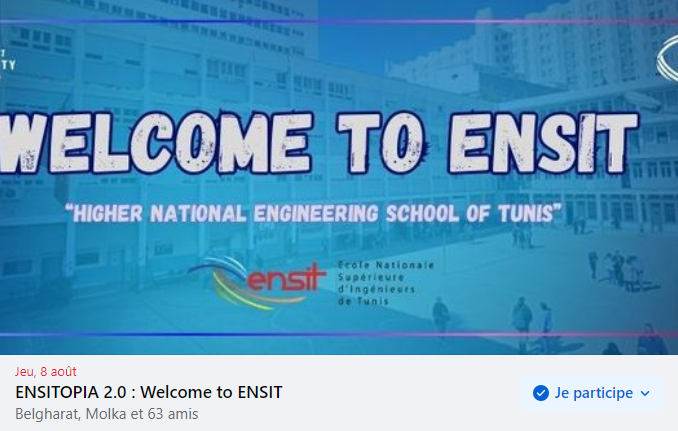

Date: 08/08/2024
Welcome to the second edition of ENSITOPIA This online event on Discord is dedicated to introduce new graduates from preparatory institutes to the Higher National Engineering School of Tunis. Dive into the world of engineering education and learn about our diverse specialties from alumni, faculty representatives, and current students.